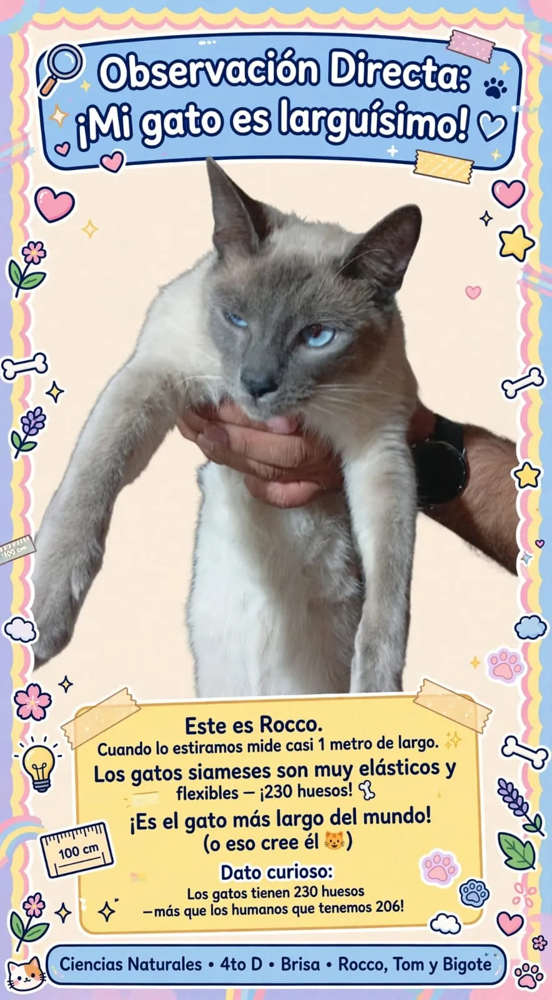
Rocco
El larguísimo · Anaranjado
Cuando lo estiramos mide casi 1 metro de largo. Los gatos siameses son muy elásticos y flexibles gracias a sus 230 huesos. ¡Es el gato más largo del mundo! (o eso cree él) 😸
Rocco, Tom y Bigote
Trabajo Práctico de Ciencias Naturales · Brisa 4to D
Conocer a mis gatosRocco, Tom y Bigote · Ciencias Naturales · 4to D · Brisa
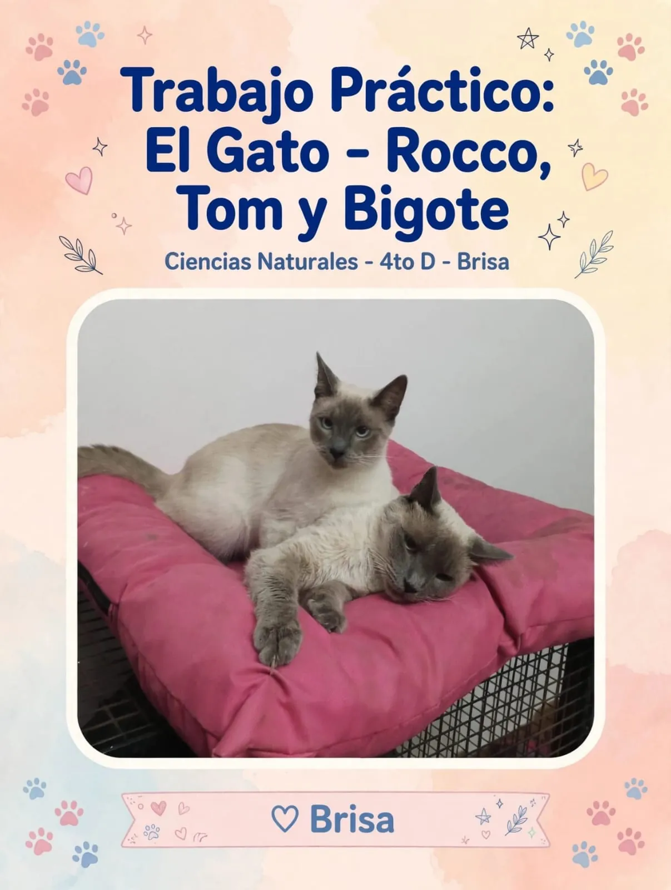
♡ Brisa
Estos son mis grandes compañeros

El larguísimo · Anaranjado
Cuando lo estiramos mide casi 1 metro de largo. Los gatos siameses son muy elásticos y flexibles gracias a sus 230 huesos. ¡Es el gato más largo del mundo! (o eso cree él) 😸
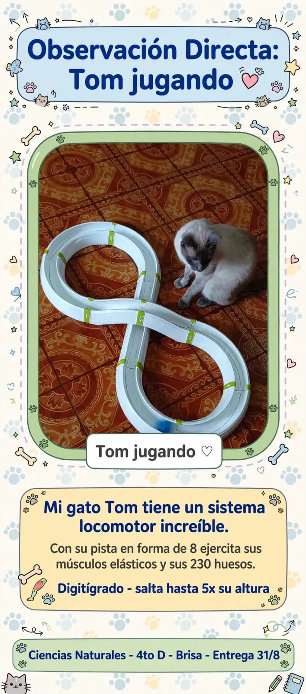
El atleta · Blanco y negro
Tom tiene un sistema locomotor increíble. Con su pista en forma de 8 ejercita sus músculos elásticos y sus 230 huesos. Digitígrado, salta hasta 5 veces su altura. 🏃♂️
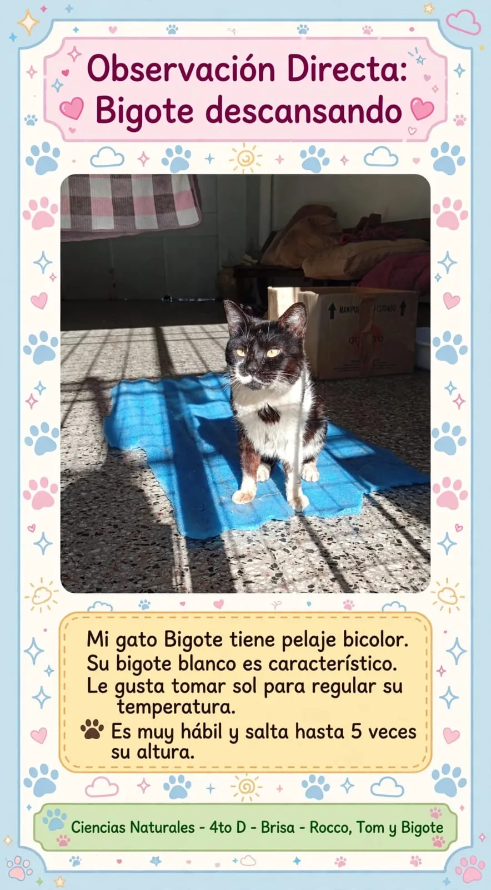
El elegido · Bicolor
Bigote tiene pelaje bicolor y su bigote blanco es característico. Le gusta tomar sol para regular su temperatura. Es muy hábil y salta hasta 5 veces su altura. ☀️
Observación directa del día a día
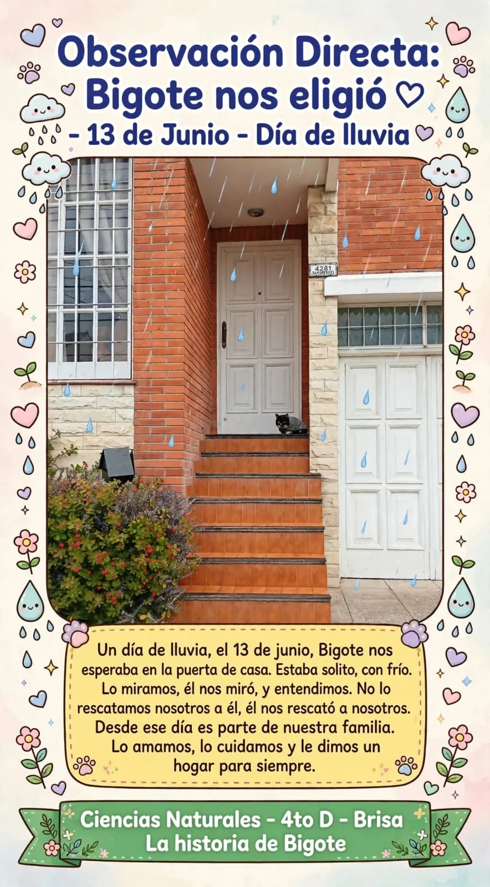
Un día de lluvia, el 13 de junio, Bigote nos esperaba en la puerta de casa. Estaba solito, con frío. Lo miramos, él nos miró, y entendimos. No lo rescatamos nosotros a él, él nos rescató a nosotros.
Desde ese día es parte de nuestra familia. Lo amamos, lo cuidamos y le dimos un hogar para siempre.
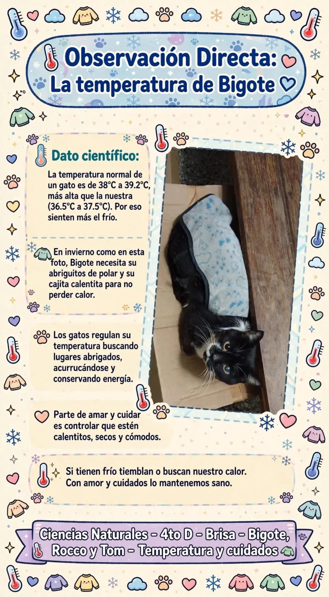
La temperatura normal de un gato es de 38°C a 39,2°C, más alta que la nuestra (36,5°C a 37,5°C). Por eso sienten más el frío.
En invierno, Bigote necesita su abrigo de polar y su cajita calentita para no perder calor. Los gatos regulan su temperatura buscando lugares abrigados, acurrucándose y conservando energía.
Mi gato Bigote tiene pelaje bicolor. Su bigote blanco es característico. Le gusta tomar sol para regular su temperatura.
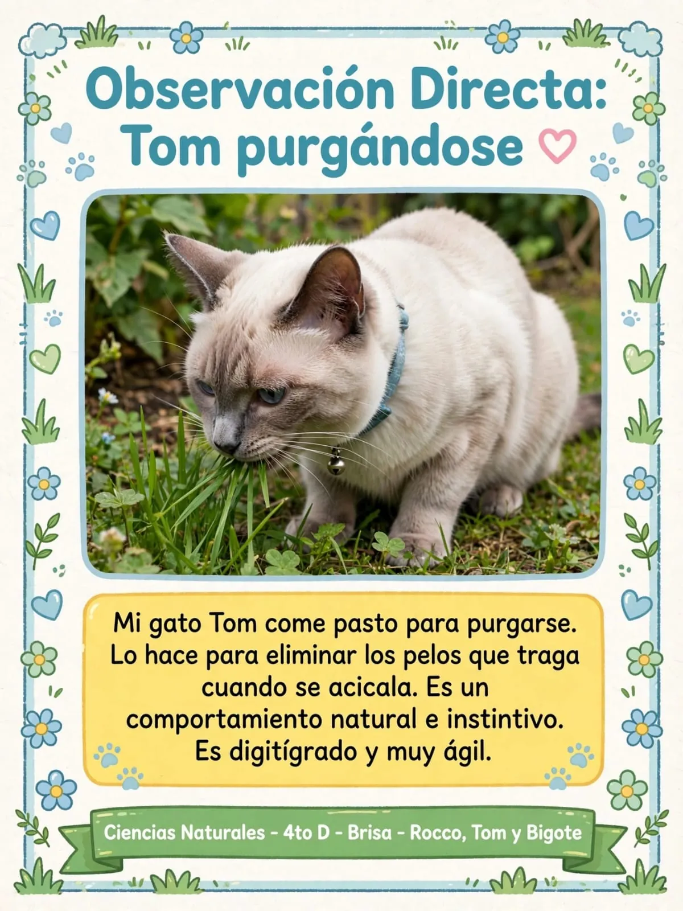
Mi gato Tom come pasto para purgarse. Lo hace para eliminar los pelos que traga cuando se acicala. Es un comportamiento natural e instintivo.
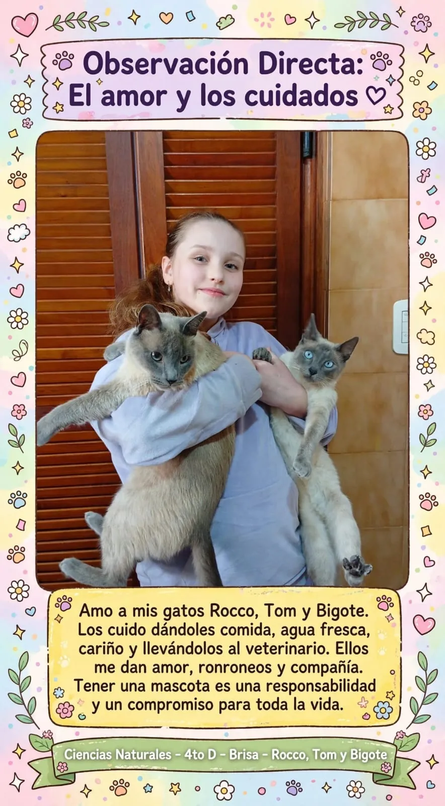
Amo a mis gatos Rocco, Tom y Bigote. Los cuido dándoles comida, agua fresca, cariño y llevándolos al veterinario. Ellos me dan amor, ronroneos y compañía.
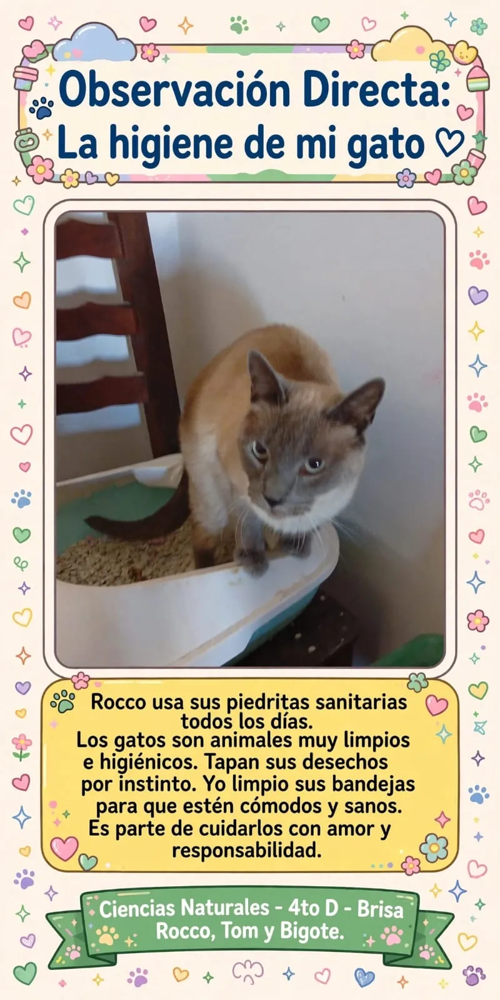
Rocco usa sus piedritas sanitarias todos los días. Los gatos son animales muy limpios e higiénicos. Tapan sus desechos por instinto.
Yo limpio sus bandejas para que estén cómodos y sanos. Es parte de cuidarlos con amor y responsabilidad.
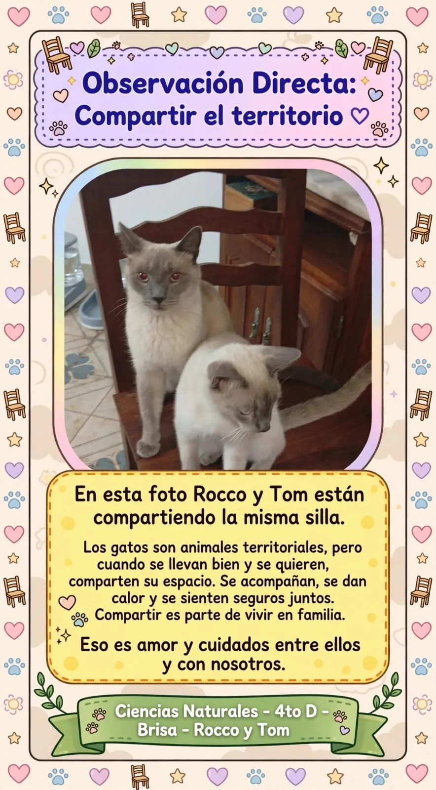
En esta foto Rocco y Tom están compartiendo la misma silla. Los gatos son animales territoriales, pero cuando se llevan bien y se quieren, comparten su espacio. Se acompañan, se dan calor y se sienten seguros juntos.
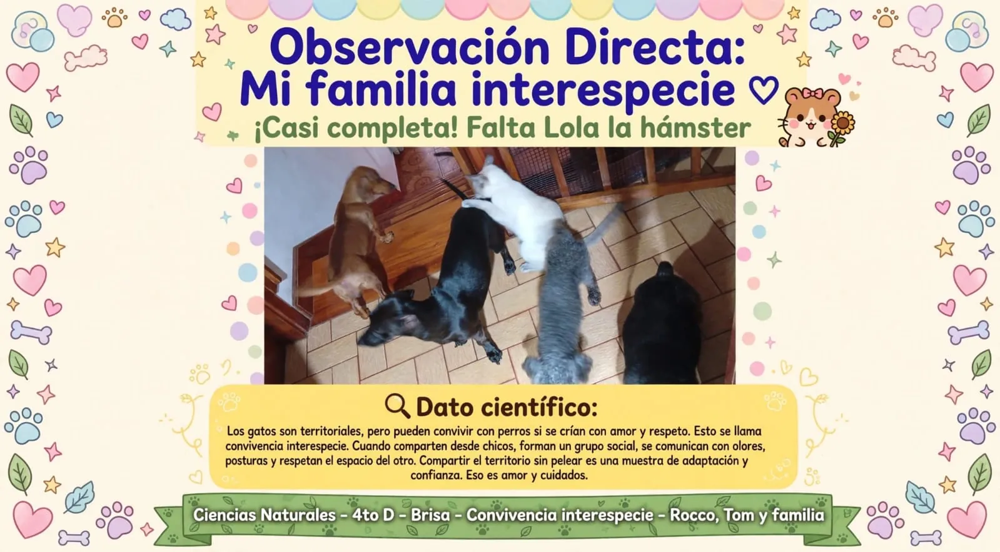
Los gatos son territoriales, pero pueden convivir con perros si se crían con amor y respeto. Esto se llama convivencia interespecie.
Cuando comparten desde chicos, forman un grupo social, se comunican con olores, posturas y respetan el espacio del otro. Compartir el territorio sin pelear es una muestra de adaptación y confianza.
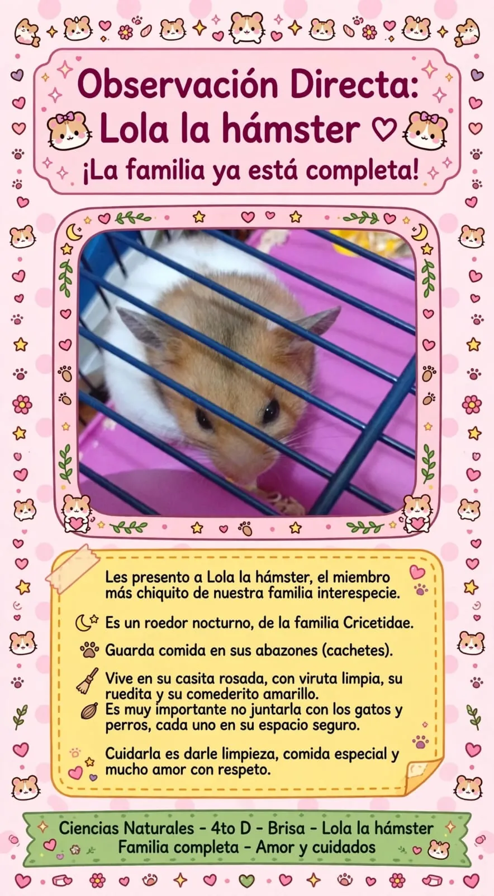
Les presento a Lola la hámster, el miembro más chiquito de nuestra familia interespecie. ¡La familia ya está completa!
¿Cómo caminamos? · ¿Cuántos huesos tenemos?
Plantígrados vs Digitígrados
Apoyamos toda la planta del pie: talón, arco y dedos. ¡Todo el pie toca el suelo!
Apoyan solo los dedos, por eso caminan sigilosos y sin ruido, como en puntitas de pie.
| Integrante | Hábitat | Locomoción | Característica |
|---|---|---|---|
| Brisa (humana) | Doméstico, casa | Bípeda, camina en 2 patas | Mamífera, razona |
| Bigote, Rocco, Tom (gatos) | Doméstico, cajas y lugares calentitos | Cuadrúpedos, sigilosos, saltan | Mamíferos, carnívoros, 38-39,2°C |
| Toby, Blanca, Mily y More (perros) | Doméstico, manada | Cuadrúpedos, corren y olfatean | Mamíferos, sociables |
| Lola (hámster) | Doméstico, jaula casita rosada | Cuadrúpeda chiquita, corre en ruedita | Roedor nocturna, guarda en abazones |
Más momentos de nuestra familia
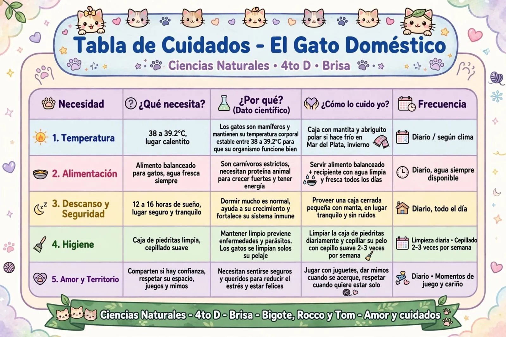
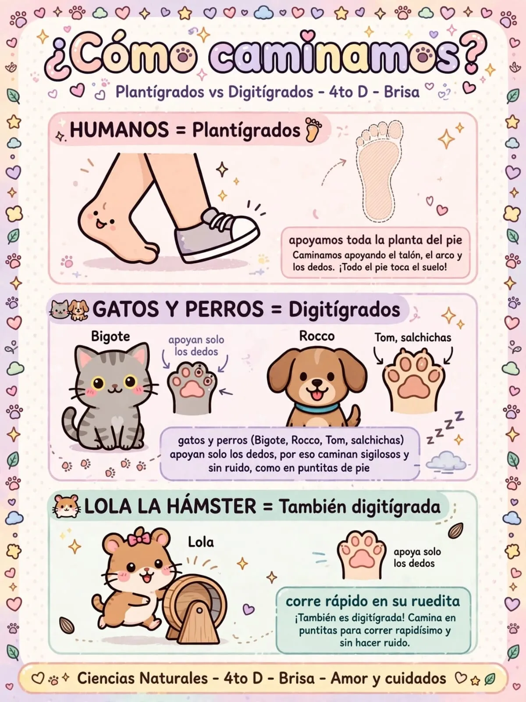
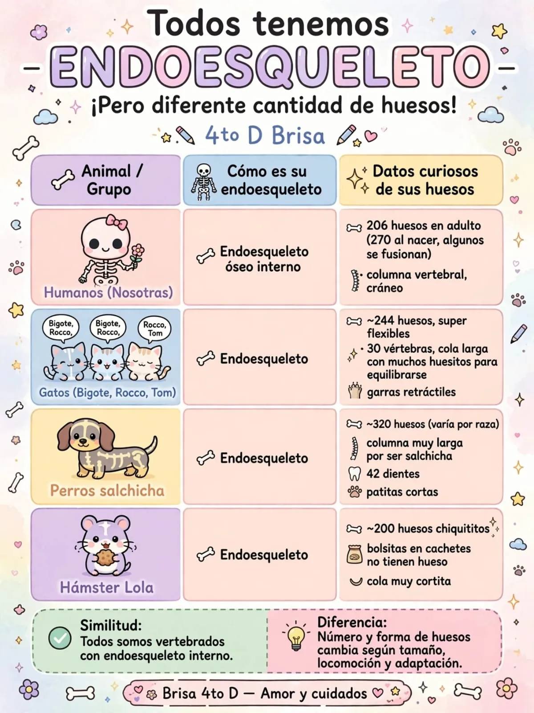
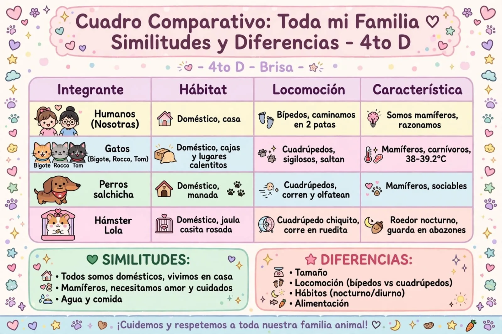
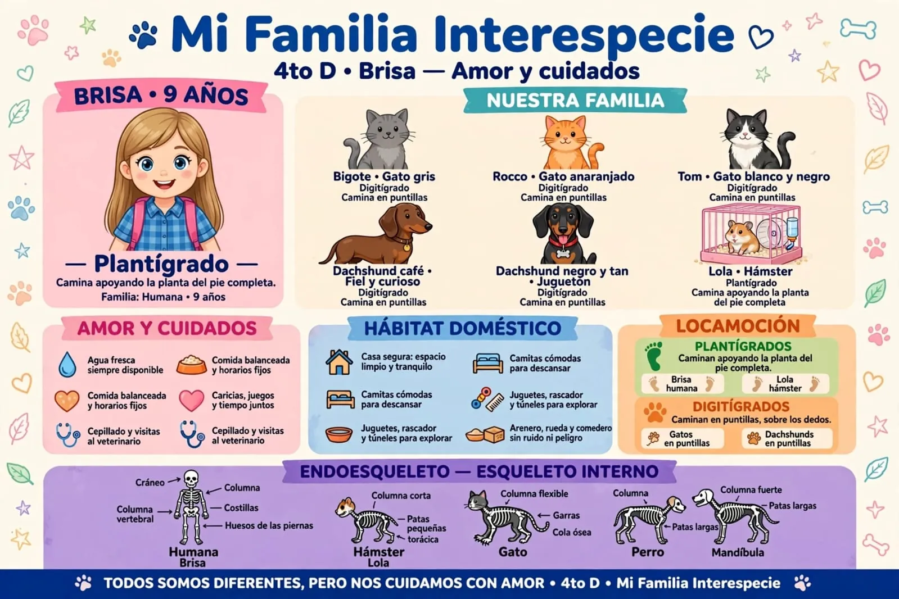
Lo que mi familia hace por ellos cada día
| Necesidad | ¿Qué necesita? | ¿Por qué? (Dato científico) | ¿Cómo lo cuido yo? | Frecuencia |
|---|---|---|---|---|
| 1. Temperatura | 38 a 39,2°C, lugar calentito | Los gatos son mamíferos y mantienen su temperatura corporal estable entre 38 a 39,2°C para que su organismo funcione bien | Caja con mantita y abriguito polar si hace frío en Mar del Plata, invierno | Diario / según clima |
| 2. Alimentación | Alimento balanceado para gatos, agua fresca siempre | Son carnívoros estrictos, necesitan proteína animal para crecer fuertes y tener energía | Servir alimento balanceado + recipiente con agua limpia y fresca todos los días | Diario, agua siempre disponible |
| 3. Descanso y Seguridad | 12 a 16 horas de sueño, lugar seguro y tranquilo | Dormir mucho es normal, ayuda a su crecimiento y fortalece su sistema inmune | Proveer una caja cerrada pequeña con manta, en lugar tranquilo y sin ruidos | Diario, todo el día |
| 4. Higiene | Caja de piedritas limpia, cepillado suave | Mantener limpio previene enfermedades y parásitos. Los gatos se limpian solos su pelaje | Limpiar la caja de piedritas diariamente y cepillar su pelo con cepillo suave 2-3 veces por semana | Limpieza diaria · Cepillado 2-3 veces por semana |
| 5. Amor y Territorio | Comparten si hay confianza, respetar su espacio, juegos y mimos | Necesitan sentirse seguros y queridos para reducir el estrés y estar felices | Jugar con juguetes, dar mimos cuando se acerque, respetar cuando quiere estar solo | Diario · Momentos de juego y cariño |
Lo que aprendí sobre mis gatitos
El gato doméstico, cuyo nombre científico es Felis catus, pertenece a la familia de los felinos. Tiene un sistema locomotor perfecto y único. Está formado por su esqueleto liviano con 230 huesos que le da sostén, y por sus músculos elásticos y fuertes que le dan fuerza para moverse y desplazarse de formas increíbles.
Camina silencioso apoyando solo los dedos (digitígrado), corre muy rápido, s alta hasta 5 veces su altura, trepa con sus garras retráctiles y siempre cae parado gracias a su reflejo de enderezamiento y a su cola que usa como balancín para mantener el equilibrio.
Todo su cuerpo está preparado para ser un gran cazador y acróbata. Por eso debemos cuidarlo con buena alimentación con proteínas para sus músculos, con juego todos los días para que ejercite y con controles veterinarios.
Tener gatitos en mi familia es un compromiso de amor y de responsabilidad para toda la vida. Son mis mascotas preferidas. Roco y Tom son mis grandes compañeros junto a Bigote y los amo mucho.